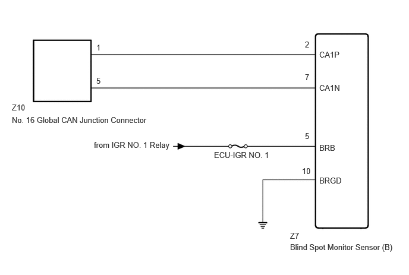

- Blind spot monitor sensor (B) branch line or connector
- Power source circuit of Blind spot monitor sensor (B)
- Blind spot monitor sensor (B) ground circuit
- Blind spot monitor sensor (B)
| Last Modified: 10-07-2025 | 6.11:8.1.0 | Doc ID: RM100000002K0GD |
| Model Year Start: 2024 | Model: Tacoma HV | Prod Date Range: [03/2024 - ] |
| Title: NETWORKING: CAN COMMUNICATION SYSTEM (except Gasoline Model): Blind Spot Monitor Sensor Communication Stop Mode; 2024 - 2026 MY Tacoma HV [03/2024 - ] | ||
|
Blind Spot Monitor Sensor Communication Stop Mode |
DESCRIPTION
|
Detection Item |
Symptom |
Trouble Area |
|---|---|---|
|
Blind Spot Monitor Sensor Communication Stop Mode |
Communication stop for "Blind Spot Monitor Master B" is indicated on the "Communication Bus Check" screen of the GTS. Click here
|
|
WIRING DIAGRAM
CAUTION / NOTICE / HINT
CAUTION:
When performing the confirmation driving pattern, obey all speed limits and traffic laws.
NOTICE:
- Because the order of diagnosis is important to
allow correct diagnosis, make sure to begin
troubleshooting using How to Proceed with
Troubleshooting when CAN communication system related
DTCs are output.
Click here
![2024 - 2026 MY Tacoma HV [03/2024 - ]; NETWORKING: CAN COMMUNICATION SYSTEM (except Gasoline Model): HOW TO PROCEED WITH TROUBLESHOOTING](../../../../stylegraphics/info.gif)
- Inspect the fuses for circuits related to this system before performing the following procedure.
- Before measuring the resistance of the CAN bus, turn the ignition switch off and leave the vehicle for 1 minute or more without operating the key or any switches, or opening or closing the doors. After that, disconnect the cable from the negative (-) auxiliary battery terminal and leave the vehicle for 1 minute or more before measuring the resistance.
- After the ignition switch is turned off, there
may be a waiting time before disconnecting the
negative (-) auxiliary battery terminal.
Click here
- When disconnecting and reconnecting the auxiliary
battery.
HINT:
When disconnecting and reconnecting the auxiliary battery, there is an automatic learning function that completes learning when the respective system is used.
Click here
- Some parts must be initialized and set when
replacing or removing and installing parts.
Click here
- After performing repairs, perform the DTC check
procedure and confirm that the DTCs are not output
again.
DTC check procedure: Turn the ignition switch to ON and wait for 1 minute or more. Then operate the suspected malfunctioning system and drive the vehicle at 60 km/h (37 mph) or more for 5 minutes or more.
- After the repair, perform the CAN bus check and
check that all the ECUs and sensors connected to the
CAN communication system are displayed as normal.
Click here
HINT:
- Before disconnecting related connectors for inspection, push in on each connector body to check that the connector is not loose or disconnected.
- When a connector is disconnected, check that the terminals and connector body are not cracked, deformed or corroded.
PROCEDURE
PROCEDURE
|
1. |
CHECK FOR OPEN IN CAN BUS LINES (BLIND SPOT MONITOR SENSOR (B) BRANCH LINE) |
(a) Disconnect the cable from the negative (-) auxiliary battery terminal.
(b) Disconnect the Z7 blind spot monitor sensor (B) connector.
(c) Measure the resistance according to the value(s) in the table below.
Standard Resistance:

Click Location & Routing(Z7)
Click Connector(Z7)
|
Tester Connection |
Condition |
Specified Condition |
|---|---|---|
|
Z7-2 (CA1P) - Z7-7 (CA1N) |
Cable disconnected from negative (-) auxiliary battery terminal |
54 to 69 Ω |
| NG |  |
REPAIR OR REPLACE CAN BRANCH LINES OR CONNECTOR (BLIND SPOT MONITOR SENSOR (B)) |
|

|
2. |
CHECK HARNESS AND CONNECTOR (POWER SOURCE CIRCUIT) |
(a) Measure the resistance according to the value(s) in the table below.
Standard Resistance:
Click Location & Routing(Z7)
Click Connector(Z7)
|
Tester Connection |
Condition |
Specified Condition |
|---|---|---|
|
Z7-10 (BRGD) - Body ground |
Cable disconnected from negative (-) auxiliary battery terminal |
Below 1 Ω |
(b) Reconnect the cable to the negative (-) auxiliary battery terminal.
(c) Measure the voltage according to the value(s) in the table below.
Standard Voltage:
Click Location & Routing(Z7)
Click Connector(Z7)
|
Tester Connection |
Condition |
Specified Condition |
|---|---|---|
|
Z7-5 (BRB) - Body ground |
Ignition switch ON |
11 to 14 V |
| OK | |
REPLACE BLIND SPOT MONITOR SENSOR (B) Click here
|
| NG | |
REPAIR OR REPLACE HARNESS OR CONNECTOR (POWER SOURCE CIRCUIT) |